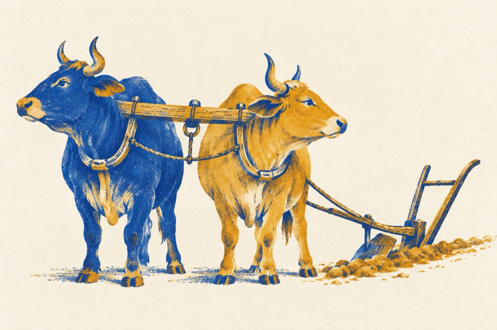

Aho aho!
Mâine anul se-noiește
Alte timpuri ne vestește
Că destule am pățit
Anii care i-am trăit!
An de an am tot schimbat
Boii ce i-am înjugat
Și nici cum și niciodată
Nu am vrut să tragă-n brazdă!
Am pus pe Plăvan la brazdă
Și pe Boian înspre om
Dar nici cum n-au vrut să tragă
Ce s-așteptăm la un bou!...
Parcă-ți toți făcuți de-o mamă
De-o făptură și de-o seamă
Tatăl bou a fost recent
Deputat în parlament
Și ne-a lăsat moștenire
Ceea ce ni se cuvine
Că n-am pus biciul pe ei
Fir-ai racu de mișei!
Se anunță cică dacă
Să pună la plug o vacă
Să-i vedem ale ei fapte
Poate ne va da și lapte
Chiar de n-o să mai arăm
Minte-atâta să-nvățăm
Când la vot ne prezentăm
Să știm Doamne ce alegem
Printre "vaci" și printre booi
Opriți plugul măi flăcăi
Că de la anul-i musai
Să schimbăm boii pe cai
Poate în ei avem bază
Grijă însă ca nechează
Aho, aho, aho!
La anul și la mulți ani!
Vasile Groza